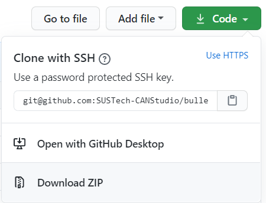
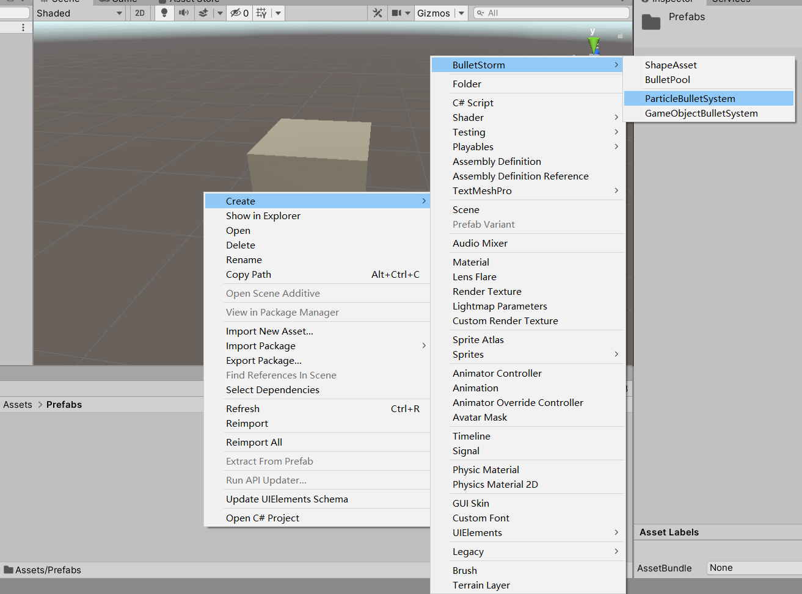
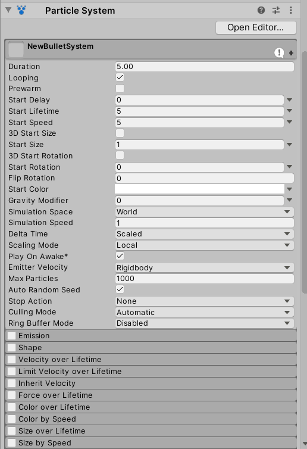
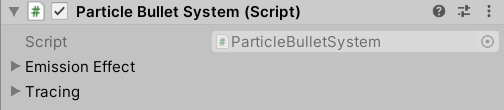
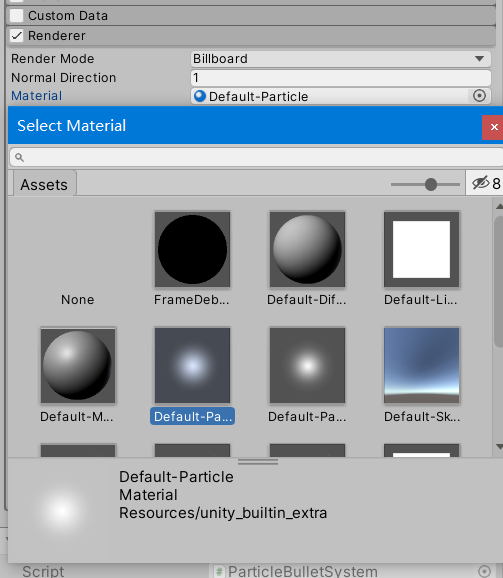
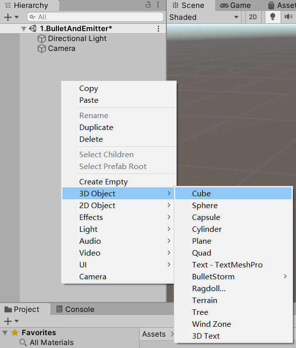
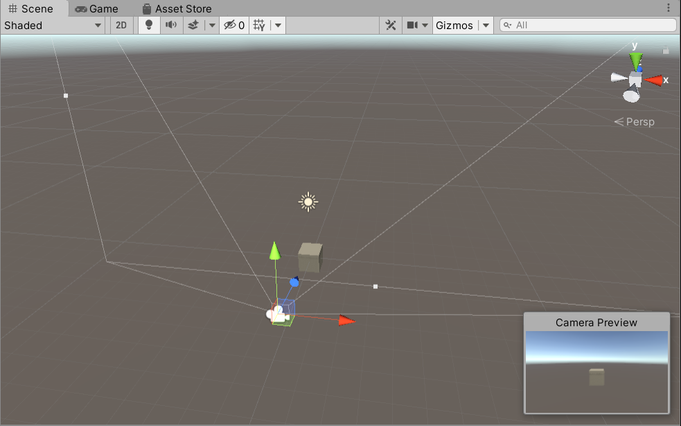
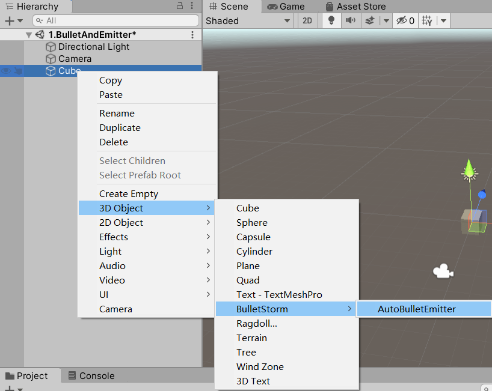
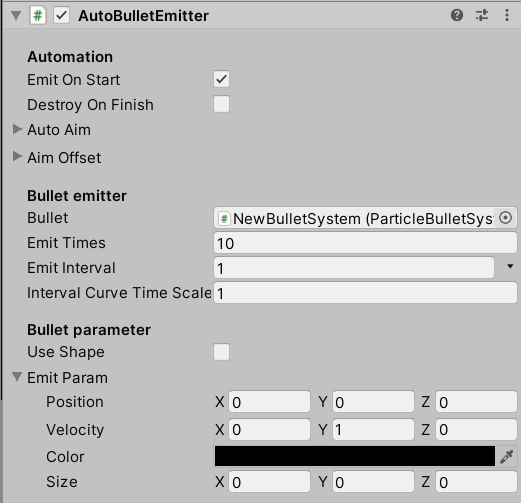
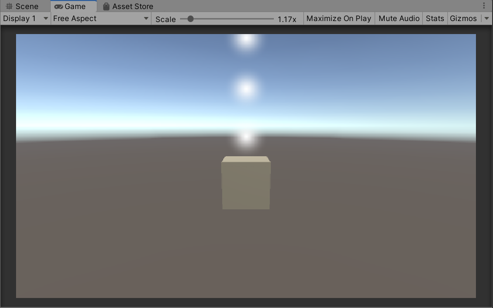

入门
这将教会您如何开始使用Bullet Storm。
安装
安装前准备
在使用Bullet Storm前，需要先安装Unity引擎：下载Unity Hub
Bullet Storm支持Unity2019以上版本，建议使用2019.4LTS或2020最新版。
下载和安装
Bullet Storm是一款开源的插件，您可以从GitHub直接下载源码。

如果您不熟悉Git的操作，请直接点击Download ZIP，在下载的压缩包内找到BulletStorm文件夹，连同文件夹一起解压到您Unity项目的Assets文件夹下任意路径。
开始使用
打开Unity，进入您的项目，在Assets路径下创建一个文件夹

右键在文件夹空白处单击，在Create菜单下找到BulletStorm选项，创建一个ParticleBulletSystem


点击刚才创建的物品，检视面板中可以看见一个ParticleSystem组件和一个ParticleBulletSystem组件


我们设置一下ParticleSystem组件，点开Renderer选项栏，选择一个默认的Material

子弹的创建已经完成，接下来在场景菜单空白处点击右键，创建一个立方体

调整立方体的位置，使你的摄像机可以看见立方体

在刚才创建的立方体上点击右键，创建一个AutoBulletEmitter

选择刚才创建的发射器，在检视面板中勾选Emit On Start，并将刚才创建的子弹拖拽到Bullet一栏中，Emit Interval设置为1，在Emit Param中设置Velocity为（0，1，0）。整体设置完成后如下图：

点击开始游戏，即可看到效果
